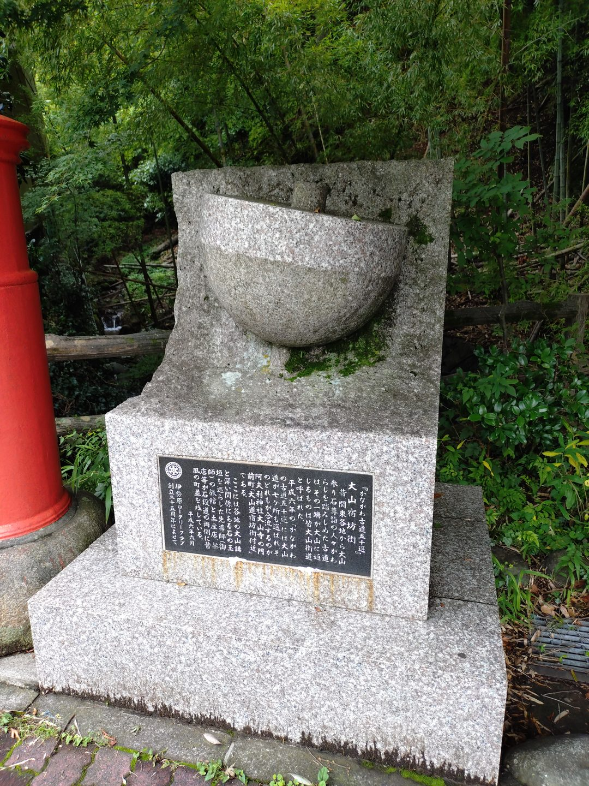
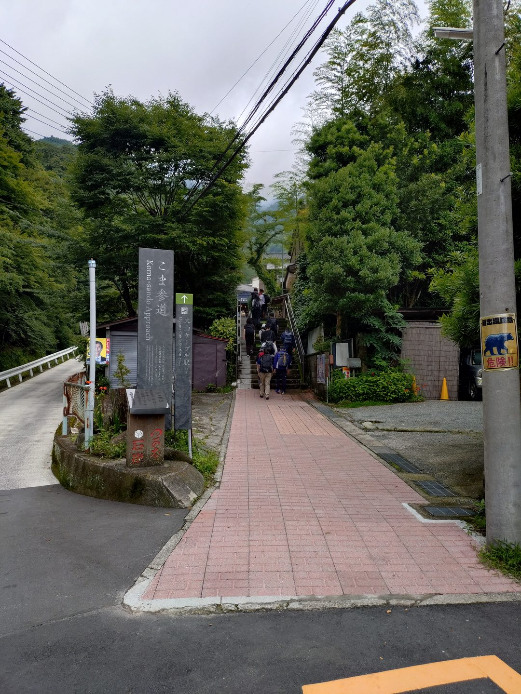
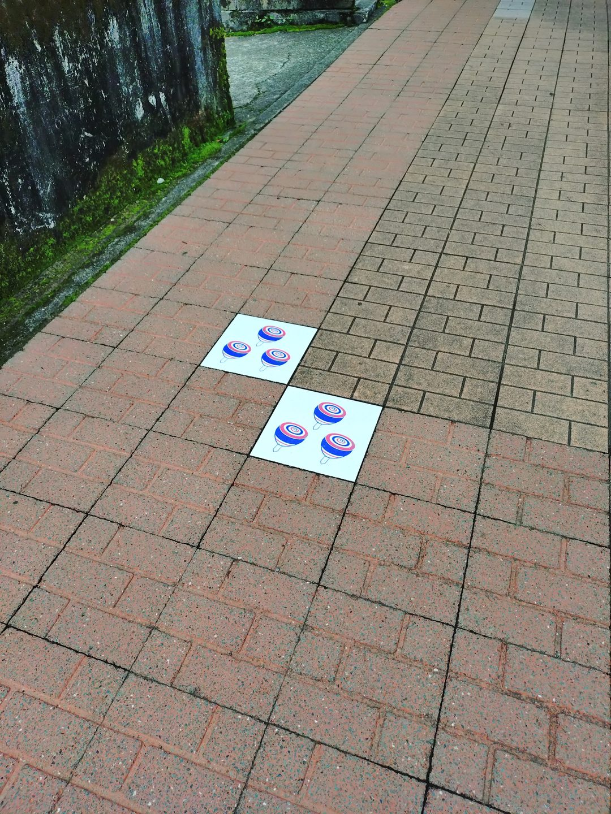
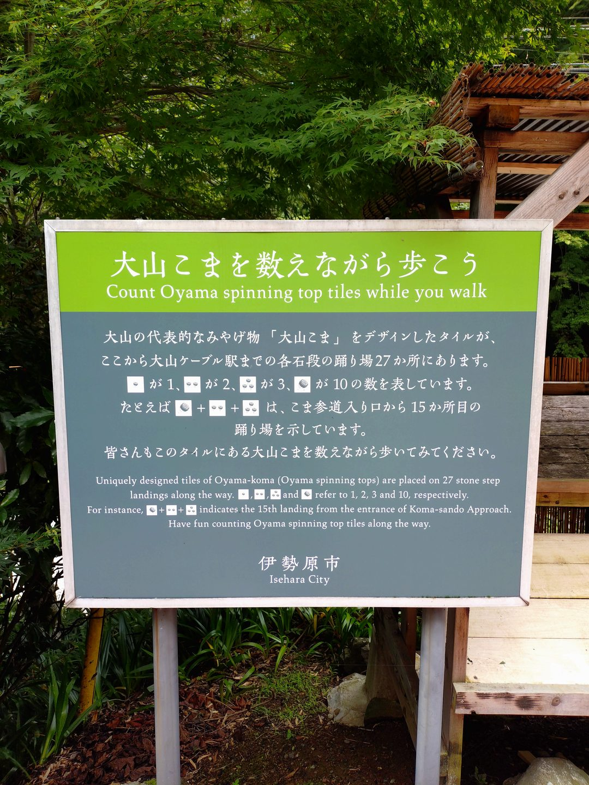
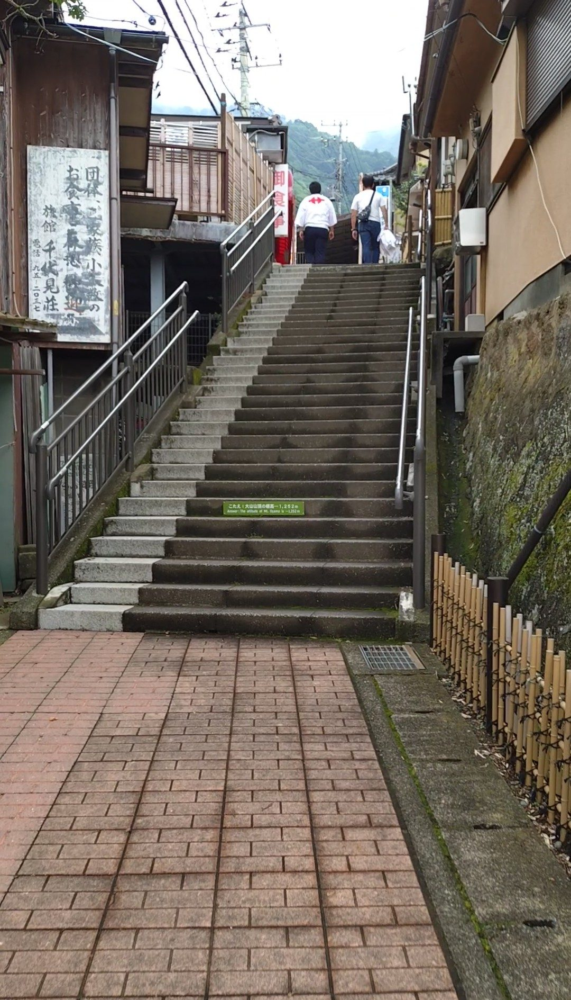
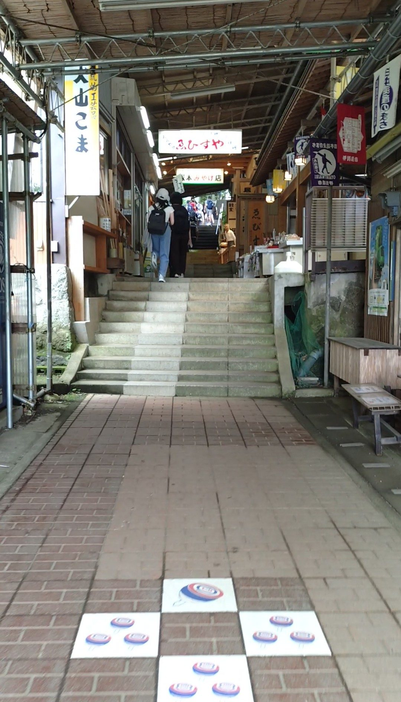
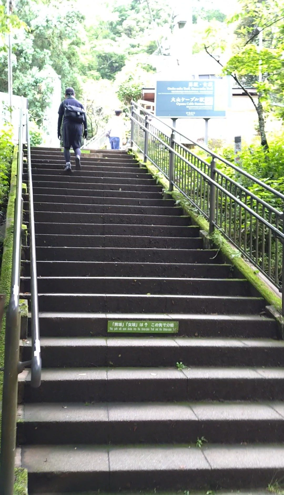
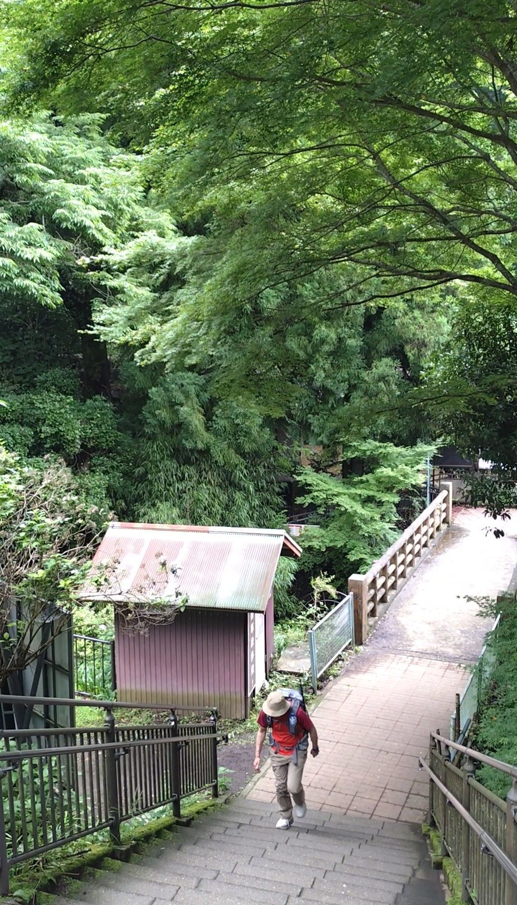

神奈川県伊勢原市にある「こま参道」は、神奈川中央交通バスのバス停「大山ケーブル」からケーブルカー駅までをつなぐ362段の石段参道です。バス停から徒歩約5分。昔ながらのお店が石段の両脇に並び、大山の名産であるコマにまつわる装飾があちこちに散りばめられています。途中から河の風が流れてきて涼しくなるなど、登っているだけで変化を感じられる、段数の多さを感じさせない楽しい参道でした。
神奈川中央交通バス「大山ケーブル」バス停下車、徒歩約5分。小田急線伊勢原駅からバスが運行しています。バス停近くのコマのモニュメントが目印です。
362段と段数は多いですが、途中にお店が並ぶ楽しい参道のため、気づいたら登り切っていた、という感覚になりやすいです。歩きやすい靴と水分補給を忘れずに。雨上がりの石段は滑りやすいのでご注意ください。
バス停「大山ケーブル」で降りて少し歩くと、バス停近くにかわいらしいコマのモニュメントが目に入ります。大山はコマの産地として知られていて、このモニュメントがこま参道の始まりを告げてくれます。この時点ですでに、お店の賑わいの気配が漂ってきます。

こま参道の入口に立つと、石段の先に賑わいが見えてきます。両脇に昔ながらのお店が並び、参拝客や観光客の声が聞こえてきます。登り始める前から、「これは楽しそうだ」という気持ちになります。

石段を登り始めると、ところどころにコマにまつわる装飾が現れます。コマの歴史や製法についての説明板があったり、タイルにコマが描かれていたりと、歩きながら大山のコマ文化に触れることができます。


街並みは昔ながらの雰囲気が続きます。今風のチェーン店やコンビニはなく、昭和の商店街を歩いているような感覚です。タイムスリップしたような不思議な心地よさがありました。

お土産屋さんも個性的で、売っているのはお漬物や昔のおもちゃなど、ここでしか手に入らないようなものばかりです。つい立ち止まって眺めてしまいます。これが362段を感じさせない最大の理由かもしれません。

しばらく登っていくと、ふっと空気が変わります。河や滝からの風が流れてきているようで、それまでよりも明らかに涼しくなります。夏の午後だったこともあり、この涼しさはとてもありがたかったです。自然の中に入ってきたのだということを体で感じる瞬間でした。

こま参道の終わりに差しかかると、青々とした自然の中を通ってきたのだなということが実感できます。362段という数字はなかなかのものですが、街並みを眺め、コマ文化に触れ、自然の涼しさに包まれながら登ってきたので、気づいたら終点に到着していた、という感じでした。登るだけでなく体験として楽しめる、ここでしかない参道です。
